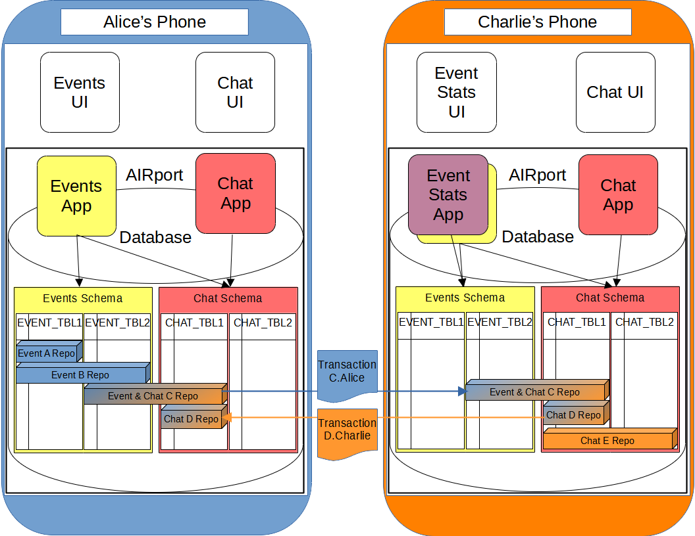
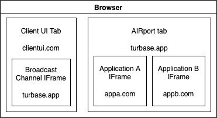

Beyond Decentralized
Introduction
Beyond Decentralized is about fair data ownership.
- Version: 0.1
- Created: July 16th, 2022
- Updated: July 21st, 2022
Please feel free to email Artem if you need information beyond what is covered here.
At the core of Beyond Decentralized is relational database technology. It structures data in relational tables and exposes it's structure as schemas. Developers are able to read these schemas and understand how data is structured. In turn applications are able to join data across multiple schemas and present it to the users.
Autonomous Interdependent Repositories enable use of relational databases in decentralized environments. Data is split into virtual Repositories. Repositories reside on user's devices in relational databases. Repository transaction logs are stored independently, on shared file systems like Filecoin.
(Future) uses of Beyond Decentralized technology:
- Turbase DAO is a company with the mission of making Applications profitable without selling user's data.
- Data Independence Network LCA PBC is an organization with the mission of keeping data in the originating communities.
Technologies
Initial project deals with data decentralization. Upcoming and planned efforts are Beyond Decentralized.
-
AIRport is
the founding project of Beyond Decentralized. It manages data Repositories
and controls data access by Applications. It provides:
- Object Relational Mapping
- Query and Persistence layer
- Application VM management
- Repository access and maintenance
AIRport runs entirely in-browser and can also run as a native application on end user devices. - Highway is an upcoming project meant to let large organizations work on data owned by local communities. It allows shared data to be housed by locally owned franchises and integrates with AIRport for user owned data. Its development is driven by the idea that international corporations can harmoniously work with locally owned community data and personal data. It will take application interoperability into the distributed world, beyond what data decentralization can offer.
- Maglev is a future project. It's about letting any number of organizations fairly and securely access community owned data. It is meant to help existing organizations plug into locally sovereign data as well as group and personal data.
The Story of Beyond Decentralized
In 2015 I wrote "Hans the Organizator" (a family organizer) and realized that families would have to store data on someone else's servers. So I set off to first write an adapter for cloud storage where people could store data under their own accounts. Over time that adapter grew to become AIRport.
Then a conceptual breakthrough came - I realized that Applications can inter-operate on user data. Since the data is stored and owned by the users, Applications only access it to provide functionality. Apps can use each other's schemas and share data right on end user's devices, without ever taking it off the device. That separated Application concerns from Data concerns and (at least for me) changed how applications can be written.
All along I had the idea that globally shared data can also be stored and used in a fair way. The idea there centered around a large organization using data that stays in the communities where it originated. Under that umbrella 3rd party applications can be written that also use the same data.
Autonomous Interdependent Repositories allow any number of databases (of any size) to be joined on demand on execution nodes. Now (in 2022) I realized that it is possible to combine multiple large databases on a network of independently operated execution nodes. This means that large organizations can interoperate in a fair data ecosystem.
Artem V. Shamsutdinov
Autonomous Interdependent Repositories
Autonomous Interdependent Repositories are about taking relational data and breaking it up into pieces that can be shared across devices.
This works because there is always a limit to the dataset that is being presented to the user at a given time. For example a thread on a forum is a unit of data. Repository represents that dataset. Repositories are meant to be small and focused.
During the design process of an Application, if the planned repositories are getting too big that means that they should be split up further. For example one part of the screen can be covered by one Repository while another part of the screen is backed by a second Repository.
It is also possible to have repositories with aggregate data computed based on contents of other repositories.
AIR - Relational
Repositories are loaded into relational databases. A Repository can span any number of relational tables.

AIR - IDs
All records in Repositories are identified by 3 keys:
- Repository GUID - a globally unique identifier for the repository
- Actor GUID - a globally unique identifier for the "Actor" that created the record.
- Actor Record ID - a numeric identifier unique to the actor (normally unique the the physical database on which the record was created)
"Actor" is a given User, using a given Application on a particular physical Database/Device. In practice it Actor is even more specific:
- A given User - identified by an email address.
- Using a given Application - identified by the URL of the Application (domain + path)
- via a particular Client - identified by the domain of the Client (Ex: "a-user-interface.com")
- on a particular Database - identified by a random GUID
The distinction between Application and Client is there because Applications run in controlled environments (IFrames with different domains, within the AIRport tab), while Clients are the UIs that use AIRports.
AIR - Transaction Logs
When stored on shared file systems or NoSQL databases Repositories are stored as Transaction logs. Each repository gets its own independent transaction log. Transaction logs are structured as:
-
Transaction History - this is a record of the transaction, with a
unique identifier and a timestamp of when the transaction took place.
-
Operation History - records an operation
in a particular relational table. It has the schema and table names,
the GUID of the Actor that performed this operation, the operation type (Create/Update/Delete)
and the order of that operation in the Transaction History.
- Record History New Value - has the column name and the value that is being Inserted or Updated in that column (for the record of the containing Record history)
- Record History Old Value - has the column name and the value that is being Deleted or Replaced (with an Update operation)
-
Record History - contains the Actor GUID and the
Actor Record Id for the record. The Actor GUID represents
the Actor that created the record and is needed for Update
and Delete operations (where the Actor in Operation History
may be a different one).
Each Transaction History carries with it all of the information on the Actors that caused the operations in that transaction.
AIR - Autonomous
Repositories are Autonomous because each Repository contains all of the information needed to be useful. That is, it can be used by itself, without any other Repositories. This refers to the fact that Repositories may reference each other's records. That is, a record in one Repository may have a foreign key to a record in another Repository.
To make repositories fully autonomous all records from other Repositories get copied to the Repository with the foreign keys. The copied records have the state of the original records as it was when it was first referenced via a foreign keys. The new record copies may then be updated and may diverge from the state of the records they were copied from.
The copy process is repeated for all records that are, in turn, pointed to by the foreign keys in the copied records. This means that no matter how deep the foreign key references go, they all get copied into the Repository with the top level foreign key.
This has the effect of making sure that Joins (made on the tables where the Repository resides) always return data for the views to display. Thus, a Repository may be loaded (and will always be usable) by itself, even if it has nested references to records in many other Repositories.
AIR - Interdependent
When the records are copied into a Repository from other Repositories, the original Repository GUID, Actor GUID and Actor Record Id are retained in separate columns. Along with them, the global address of the Repository is retained as well, allowing AIRport to lookup that Repository (where the copied records came from).
These "original" Ids are retained in another set of keys that do not have foreign key constraints on them. AIRport can then be instructed to take a given Query and run it in cross-Repository mode. When doing so AIRport will use LEFT JOINs and progressively load missing Repositories and re-query until it returns complete object graphs with all of the records from the original Repositories.
The query process may be slow (due to necessary network round trips to retrieve additional Repositories) but may be served via Observables, allowing the UIs to progressively load more data as it becomes available.
Thus Repositories are Interdependent and the UIs can make the choice of viewing the Repository-local data only, or loading the cross-Repository view, that may at first return Repository-local data and then can fill in the data across referenced Repositories.
AIRport
AIRport is a DApp Runtime. It encapsulates decentralized storage, provides persistance and validation frameworks, standardizes API calls.
AIRport implements Autonomous Interdependent Repositories. It provides a common runtime on which Decentralized Applications can run and be accessed by Clients such as Web UIs.
Alice has the Event App and the Chat App installed in AIRport ( on her device). Charlie has the Chat App and the Event Stats App installed on his device. The Event Stats App automatically installs the Event App and it's schema.
The data for all three Apps is stored in Chat/Event specific Repositories, one repository per chat/event. Alice has Events A and B that are not shared with Charlie. Alice and Charlie share event C and its chat. They participate another chat D that isn't associated with any event. Charlie has a chat E that isn't shared with Alice.
The core functionality provided by AIRport is:
- Database ORMs and entity state management.
- API interfaces for UI-to-App and App-to-App interaction.
- Entity validation.
- Transactions & Scope.
- Cross-database data synchronization.
ORM & State
Default ORM framework for AIRport is Tarmaq. It provides:
- Entity Mapping API: Entity and Property decorators in JPA style.
- Query API: TypeScript integrated SQL statements with SELECT clause as entity tree.
- DAO API: Strongly typed entry points into the Query API.
AIRport supports creation of additional ORMs. All ORMs can return fully interlinked graphs of Entity objects. Support for traditional SQL result sets is also available.
AIRport has sessionless entity state management. All entity objects returned by the ORM contain a hidden property with the original state of the entity. When the entities are saved, AIRport calculates diffs on the entity objects (using the original object state) and performs the necessary updates. Tracking original state removes the need for maintaining Hibernate-like ORM sessions and insulates edited objects from possible state overwrites (due to remotely made updates to the same objects).
API
AIRport Apps run in isolated VMs inside AIRport. Clients (UIs) communicate with Apps via AIRport:
Apps define API methods by decorating them with @Api() decorator. AIRport generates SOAP like stubs for Clients and other Apps to use. Invoking those stubs sends requests to AIRport which forwards them to Apps where they are from (loading missing Apps when necessary). The default import of an Application contains just the API stubs. A separate bundle is created for Application itself (and is deployed a standardized URL for AIRport to load into IFrames).
App VMs are run in IFrames. Because Application server domains differ, Apps are isolated from AIRport and other Apps (from different domains). The only way Apps can interact with AIRport and other Apps is via the API framework defined by AIRport.
Apps cannot directly access the relational database hosted by AIRport and must make standardized persistence requests (via provided ORMs) that are pre-processed and sanitized by AIRport.
Apps can join to tables in schemas of other Apps. Apps cannot directly modify data in schemas that belong to other Apps. Apps must call APIs defined by other Apps to make data modifications (in schemas of those other Apps).
Validation
AIRport is designed to bridge the client-server gap. Objects passed as parameters to API calls retain all changes when returned to the Client. And, objects passed into DAO.save methods are automatically updated to the saved state. Thus, there is no need the the Client to query for the new entity state (of the just saved entity objects). That state is automatically updated in the parameter object passed from the Client (the objects that were send to the API to be saved).
Likewise, AIRport integrates data in the opposite (Client to Server) direction. The entity objects returned by APIs contain their original (previous) state (in a hidden/private property). The Client make modifications to objects and sends them back. DAO.save calls then use the original (previous) state to determine which properties where modified. If the passed-in objects don't have the original state (or IDs) they are treated as new objects. DAO.save calls will persist all objects in the passed in object trees that are new/updated/to be deleted (as long as those objects are in the schema of the Application).
This seamless integration of client and server requires strict validation of all data that is passed into Application APIs. Validating via standard procedural calls is both verbose and error prone. AIRport includes a library that abstracts away the CRUD of validating API inputs.
AIRport validation leverages the Database Entity definitions and provides a type safe API that declaratively describes the desired (valid) state of the passed in entity tree. AIRport provides a validation DSL (in the form of validation functions, tied to the JSON entity tree declaration). All passed in state that is not validated is automatically flagged. All objects that are not validated are excluded from persistence operations. Non-validated properties (with new/modified values) on validated objects cause validation to fail.
Transactions & Scope
Every API call that goes through AIRport get's its own savepoint. This means that if an API method fails and throws an Error, all of its database operations (and operations of API methods it itself called) will be rolled back. If an API method is wrapped in a "try {} catch(e) {}" block, catching the Error will allow the calling API method to do additional processing (and database operations) even if its nested API calls failed.
Transaction tracking is implemented behind the scenes, without requiring the developers to pass transaction objects around. In the same way request information for an API operation is also implemented in the background. API services and DAOs can just:
@Inject()
requestManager: RequestManager
Synchronization
AIRport handles synchronization of Repositories across multiple devices. If there are synchronization conflicts AIRport automatically resolves them based on modification timestamps (with latest modification winning) and records conflict resolutions and their outcomes in Repository transaction history. UIs can hook into that resolution history and notify the Users that there were conflicts. UIs can also present to the Users what the conflicting values were and allow the Users to manually overwrite automatic resolution outcomes.
Highway
Highway is AIR for the server environment.
Goal of Highway is to let local communities own their data while allowing global users to search it and contribute to it. The initial use case for it is a social network where locally operated (where possible community owned) franchises host community data.
Technologically this can be accomplished by leveraging existing technologies such as globally shardable CockroachDB and ScyllaDB. Autonomous Interdependent repositories are used for integration with private user data, for performance benefits and to provide an eventual migration path to Maglev.

Highway will work by sending modification requests to the server, where they will be processed and placed into a distributed relational database. Because Highway data is stored in Repositories, read queries will go against a wide column store. Transaction logs will be pulled into the client-side AIRport engine where relational data will be reconstructed and queried. AIRport will monitor incoming transaction log entries and serve data via Observable feeds.
Highway will allow Applications from multiple providers to access and add to community owned data (access across schemas and modify in Application's own schema). Eventually this will be done based on rules specified by the community owned hosting franchises.
Applications will run in VMs and will have access to only the APIs specified by AIRport, thus preventing abuse of community data.
Maglev
Maglev is AIR across organizations.
Maglev is about allowing organizations that interoperate in an ecosystem of Repositories.

AIRport can run on a trusted network of execution nodes (a la blockchain validator nodes) and work with Repositories from multiple Organizations. Running AIRport on execution nodes ensures fairness and security of data processing and protects organizations and their data. AIRport can enforce data sharing and modification rules specified by each organization and allow Organization and third party Applications access (organization and community owned) data. AIRport execution nodes can work in concert with Client-side AIRport engines to give combined decentralized and "organization distributed" data views to the user.